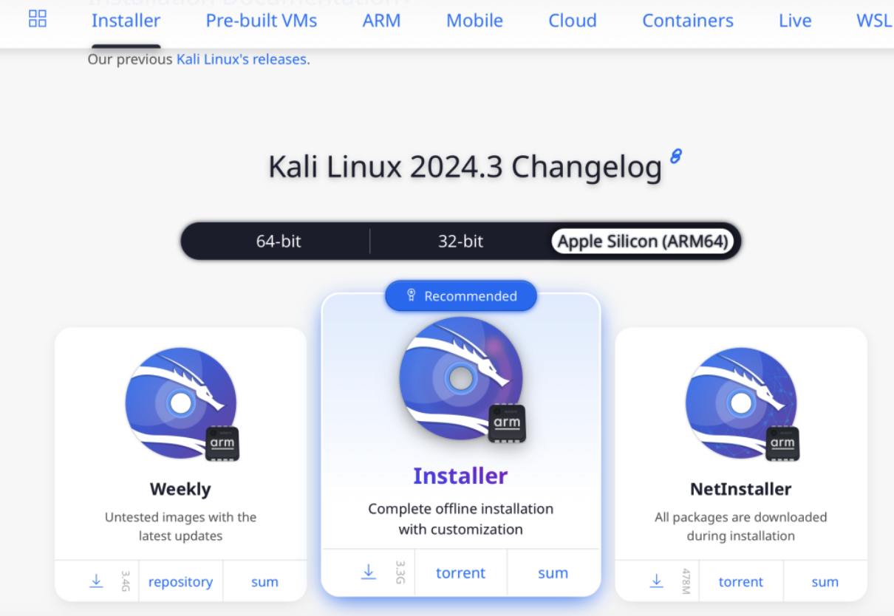

Es una distribución de Linux basada en Debian, diseñada específicamente para pruebas de penetración y auditoría de seguridad. Fue desarrollada y es mantenida por Offensive Security, un proveedor de formación en seguridad de la información.
Página oficial de Kali Linux: www.kali.org
En el siguiente video te demuestra paso a paso de como instalar el Kali Linux junto con su Maquina Virtual UTM.
Debes tener en cuenta los detalles de tu MacBook como el software y hardware especialmente en el disco duro.
Paso a Paso:

Descargar la maquina virtual UTM.
Página oficial de la maquina virtual UTM: https://mac.getutm.app
En el siguiente video te explico de como instalar UTM paso a paso.